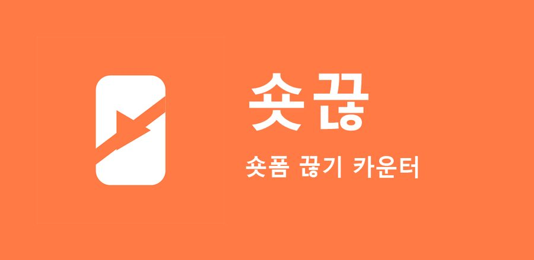
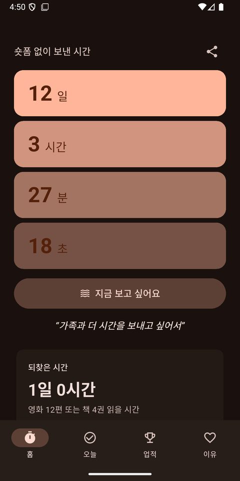
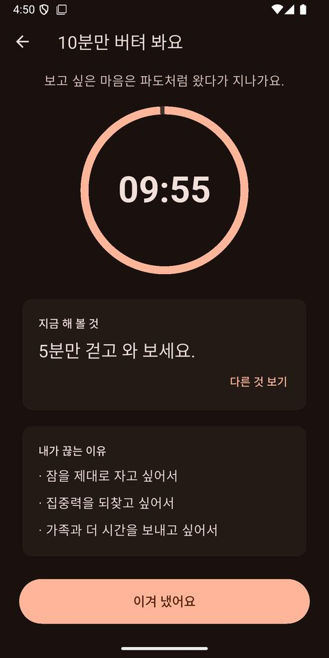

숏폼 중독 끊는 법, 쇼츠·릴스 시간 줄이는 7가지 방법
"딱 하나만 보고 자야지" 하고 켰는데 정신을 차려 보니 한 시간이 지나 있었던 경험, 많은 분이 겪습니다. 숏폼은 의지가 약해서 못 끊는 것이 아니라, 원래 멈추기 어렵게 만들어진 형식입니다. 왜 그런지 알고, 작은 장치를 하나씩 더하면 보는 시간을 확실히 줄일 수 있습니다.
숏폼은 왜 멈추기 어려울까
- 끝이 없습니다. 영상이 끝나면 다음 영상이 바로 나와, 멈출 지점이 없습니다.
- 짧습니다. "30초짜리 하나쯤"이라는 생각이 수십 번 반복됩니다.
- 다음이 궁금합니다. 넘길 때마다 무엇이 나올지 몰라서 계속 넘기게 됩니다.
보는 시간을 줄이는 7가지 방법
1. 내가 얼마나 보는지 먼저 확인하기
폰 설정의 디지털 웰빙(사용 시간) 메뉴에서 앱별 사용 시간을 확인해 보세요. 숫자로 보면 줄일 마음이 생깁니다.
2. 첫 화면에서 숏폼 앱 치우기
앱을 폴더 안쪽이나 마지막 화면으로 옮기세요. 한 번 더 누르는 수고가 무의식적으로 켜는 습관을 막아 줍니다.
3. 잠자리에 폰 가져가지 않기
숏폼을 가장 오래 보는 시간은 잠들기 전입니다. 충전기를 침대에서 먼 곳에 두는 것만으로도 효과가 큽니다.
4. 보고 싶을 때 할 일을 미리 정하기
물 한 잔 마시기, 스트레칭, 짧은 산책처럼 바로 할 수 있는 일을 하나 정해 두세요. 충동은 보통 몇 분이면 지나갑니다.
5. 줄이려는 이유를 적어 두기
"아이와 놀아 주려고", "잠을 더 자려고"처럼 나만의 이유를 적어 두고, 보고 싶을 때 다시 읽어 보세요.
6. 참은 시간을 기록하기
숏폼 없이 보낸 시간이 쌓이는 것을 눈으로 보면, 그 기록을 깨기 싫어서라도 더 참게 됩니다.
7. 한 번 봤다고 포기하지 않기
완벽하게 끊지 못해도 괜찮습니다. 어제보다 덜 봤다면 잘하고 있는 것입니다. 다시 시작하면 됩니다.
기록을 도와주는 앱, 숏끊

위 방법 중 5, 6, 7번을 돕기 위해 퇴근후랩이 만든 앱이 숏끊입니다.
- 숏폼 없이 보낸 시간을 일, 시간, 분, 초로 세어 줍니다.
- 아낀 시간과 안 본 영상 수, 그 시간이면 볼 수 있는 영화와 책을 보여 줍니다.
- 보고 싶을 때 누르는 버튼이 타이머와 호흡 안내, 내가 적어 둔 이유를 보여 줍니다.
- 조금 본 날은 본 시간만 남기고, 기록은 그대로 이어 갑니다.

